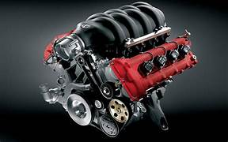
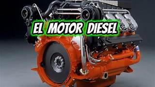

MOTORES
Aqui encontraras toda la informacion necesaria de motores.
Motores V8
El V8 es una configuración muy común para camionetas, automóviles de gran tamaño y en vehículos tipo "muscle cars". Su cilindrada en raras ocasiones es inferior a los 3.0L y ha llegado a superar los 10.4L.
Motores diesel
El motor diésel es un tipo de motor térmico de combustión interna conocido por su principio de funcionamiento basado en la autoignición del combustible. Este principio se debe a las altas temperaturas generadas por una elevada relación de compresión
